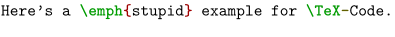

Contents
Summary
The instances of \starttyping ... \stoptyping are used for displaying verbatim text.
Instances
| \starttyping ... \stoptyping | |
| \startLUA ... \stopLUA | |
| \startMP ... \stopMP | |
| \startPARSEDXML ... \stopPARSEDXML | |
| \startTEX ... \stopTEX | |
| \startXML ... \stopXML |
Settings instance
Settings instance:argument
| \startTYPING[...,...] ... \stopTYPING | |
| [...,...] | continue |
Description
Typeset verbatim code. The instances with uppercase identifiers in them are tailored to specific 'languages' in the verbatim code.
Use the \typefile command to include the contents of a file like a \starttyping ... \stoptyping block.
Examples
Example 1
Usually you will use an instance of "typing", like TEX:
-
\startTEX Here’s a \emph{stupid} example for \TeX-Code. \stopTEX
- 
Notes
See also
Help from ConTeXt-Mailinglist/Forum
All issues with:
- \starttyping on the mailing list (all results)
- \starttyping on the mailing list (subject only)
- \starttyping on stack exchange
- \starttyping in ConTeXt's source
- \startLUA on the mailing list (all results)
- \startLUA on the mailing list (subject only)
- \startLUA on stack exchange
- \startLUA in ConTeXt's source
- \startMP on the mailing list (all results)
- \startMP on the mailing list (subject only)
- \startMP on stack exchange
- \startMP in ConTeXt's source
- \startPARSEDXML on the mailing list (all results)
- \startPARSEDXML on the mailing list (subject only)
- \startPARSEDXML on stack exchange
- \startPARSEDXML in ConTeXt's source